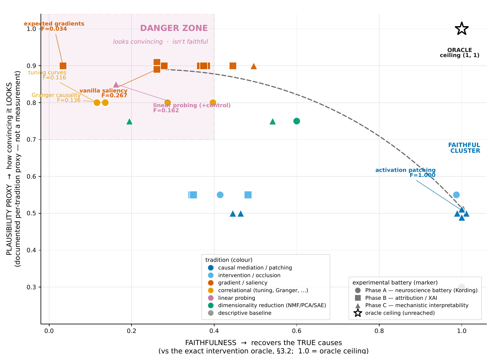
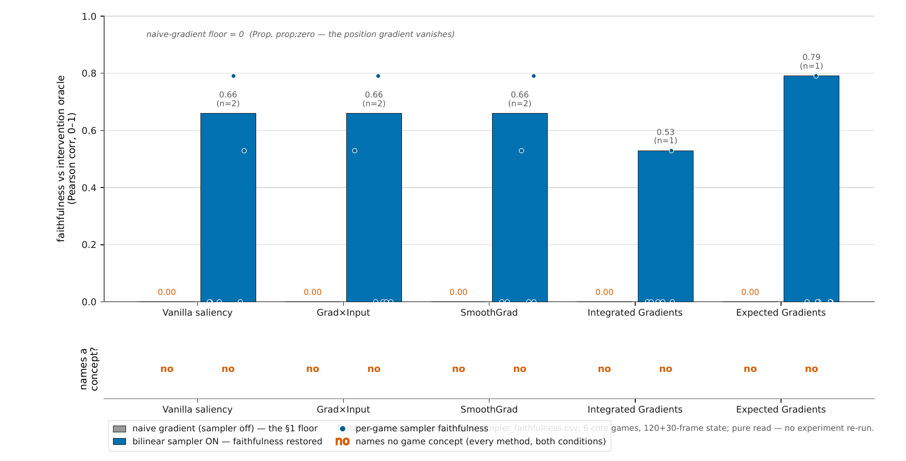

Because the VCS is fully known and exactly intervenable, every explanation can be scored against ground truth. An oracle measures the true causal effect of each state variable; XAI and mechanistic-interpretability methods are then graded by how well they recover it. Headline finding: causal/intervention methods stay near-ceiling while gradient and correlational methods collapse on the discrete sprite-position outputs whose naive gradient is exactly zero.
paper PDF · Scoring XAI / mechanistic-interpretability methods against the exact causal truth of a known machine
Causal methods recover the truth; gradient/correlational methods collapse on the discrete sprite-position outputs whose naive gradient is exactly zero.
From leaderboard.json
· headline_contrast.position_regime.
Every claim → script → command → artifact → runtime → hardware → verifying gate.
Exact causal map |Δy(u)| via clamp/resample-and-rerun; content-path gradient ∂y/∂u via the SOFT-STE substrate; a cross-check confirming the two agree. bit_exact_rerun flag set on the records.
Candidate RAM→concept maps from OCAtari/AtariARI, upgraded to causal by verify-by-intervention (does the byte actually move the framebuffer?).
Connectomics, single-unit lesions, tuning curves, pairwise correlations, LFP spectra, Granger causality, NMF/PCA, whole-state — each scored against the true read/write graph over 6 core games.
Optional circuit-level (transistor) battery; product-owner-gated after the pilot. Not run for this submission — listed for honesty.
Vanilla gradient, Grad×Input, Guided Backprop, SmoothGrad, Integrated Gradients, Expected Gradients, Occlusion, extremal perturbation, RISE, LIME, KernelSHAP, counterfactual + the N/A audit — each scored by correlation and deletion/insertion AUC vs the oracle.
Activation patching / causal tracing, interchange/DAS, attribution patching, path patching, ACDC, sparse autoencoders, NMF/PCA dictionaries, causal scrubbing, linear probing + control tasks, logit/tuned lens.
Faithfulness-vs-plausibility leaderboard aggregated from every committed per-game record. Headline contrast: position-regime causal faithfulness 0.4118 vs gradient/correlational 0.0683 (gap 0.3435).
A self-contained scoring harness (magnitude_proxy demonstration) that an auditor can run with no ROM, against the committed oracle records.
Rasterised from the paper’s committed PDFs; click to enlarge.

The leaderboard axes. Built from leaderboard.json + faithful_demo.json.

The differentiable sampler is faithful yet semantically empty.